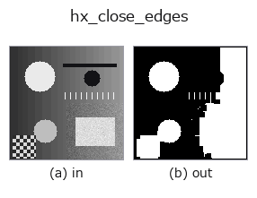

halcon_ext op• 데이터 종류: image → image
• 호출: fullseye.apply(img, "hx_close_edges", a=0.5, b=0.5)(2-D 는 이미지 1 장 + 스칼라 노브 2 개 a,b∈[0,1] 모델)
• HALCON 대응: close_edges(의미·매개변수는 HALCON 레퍼런스가 참고가 됩니다)

*그림은 128×128 합성 입력에서 실제로 실행한 출력. 왼쪽이 입력, 오른쪽이 출력. 점군은 위에서 본 산점도(밝기 = z), 1-D 열은 꺾은선, 볼륨은 z 방향 최대값 투영, 동영상은 가운데 프레임, 복소 영상은 진폭이며, 그림이 되지 않는 반환값은 값 자체를 표시한다.*
노브 a 를 훑기(0.1 / 0.5 / 0.9, 다른 노브는 기본값):
▸ hx_close_edges: 노브 a 스윕 (문서 사이트)
노브 b 를 훑기(0.1 / 0.5 / 0.9, 다른 노브는 기본값):
▸ hx_close_edges: 노브 b 스윕 (문서 사이트)
다른 영상에서도(합성 장면 / 사진 / 동전. 윗줄이 입력, 아랫줄이 그 출력. 노브는 기본값):
▸ hx_close_edges: 다른 입력 이미지 (문서 사이트)
*4열은 컬러 (H,W,3) 입력. 이 op는 채널을 넘나들지 않고 컬러를 다룰 수 있다(색 채널을 세 번째 공간축으로 컨볼루션하지 않음).*
에지 진폭 이미지의 틈을 메웁니다: 임계값 a 로 이진화 → 형태학적 닫기(반지름 b).
v > a로 이진화한 뒤, scipy.ndimage.binary_closing을 3×3 완전 결합(8근방) 구조 요소의 it회 반복 = (2*it+1) 정사각형으로 1회 닫힘 연산(팽창→침식)하여, 0/1의 float 영상으로 반환한다.
• a → 이진화 임계값(에지 진폭 영상을 상정. a=0에서는 0보다 큰 화소가 모두 전경).
• b → 구조 요소의 반복 횟수 it = 1 + int(b*3)(1~4, 정사각형의 변은 3~9화소). 닫을 수 있는 틈은 대략
2*it화소 이하.
주의: binary_closing은 영상 밖을 0으로 하여 침식하므로, 영상 끝에서 it화소의 띠는 반드시 0이 된다(전면 1인 20×20에 it=1을 걸면 남는 것은 18×18). 끝에 접하는 에지를 다룰 때는 미리 여백을 붙이거나, 결과를다시 팽창시킨다. 입력은 image(에지 진폭)이고 출력도 image sort이지만 내용은 이진. hx_nonmax_dir나 sobel_amp의뒤에 두고, 이어진 에지는 hx_region_to_label이나 hx_detect_edge_segments로 넘긴다.
아무것도 찍히지 않은 프레임(실측): 밝기가 균일한 이미지를 넣으면 밝기와 무관하게 결과가 비어 있다(모든 화소가 배경 0). 순백이든 순흑이든 같으며, 밝기 자체로는 아무것도 검출하지 않는다.
• gallery2d_halcon_ext 패밀리 가이드
• 샘플 데이터 카탈로그(DL URL / 라이선스) —— 2-D 는 skimage.data(BSD/public)+ 합성, 3-D 는 실데이터 소스(Stanford/PDS 등)의 DL URL.
• 연산자의 내력·참고문헌 —— 이 연산자 족의 바탕이 된 연구/기법의 출처.
• 알고리즘의 정전(저자·연도)과 용도는 위의 패밀리 사용 가이드에 적혀 있습니다.
아래 프로그램은 실제로 실행됨을 확인했습니다(그림과 같은 입력). Studio 도움말에서는 이 블록이 버튼이 되어 즉시 불러와 실행할 수 있습니다.
hx_close_edges 0.50 0.50
• gallery2d_halcon_ext — py -3.11 examples/gallery2d_halcon_ext.py
• poc_metal_grain_size — py -3.11 examples/poc_metal_grain_size.py
image 를 입력으로 받는 것)identity · gaussian · mean_box · bilateral · unsharp · median · min_filter · max_filter
halcon_ext)hx_gen_circle · hx_gen_ellipse · hx_gen_rectangle2 · hx_gen_checker_region · hx_gen_grid_region · hx_gabor · hx_fit_surface1 · hx_fit_surface2
*Provenance: ops.py — 2D 연산자 레지스트리. 이 op 노트는 tools/opdocs.py md 가 자동 생성합니다(직접 편집하지 마세요).*
© 2026 Kazufumi Furuse — Fullseye operator documentation. Licensed under Apache-2.0.